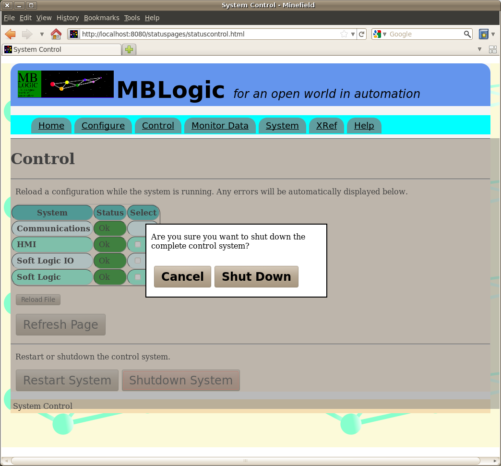

MBLogic
for an open world in automation
MBLogic
for an open world in automation
Help - Installation - Stopping the Application
Overview:
This section describes how to shut down the system.
Shut Down Methods
You may shut down the system two different ways. One method is via the systus system interface. The other method is via a keyboard code directly into the terminal window. If your web browser does not fully support the capabilities needed to use the web interface, you will need to use the keyboard command.
Using the Menu Interface
To shut down the system via the system status web interface, select the "control" option from the menu. You should see a web page which looks something like the following.

Click on the "Shut Down System" button which is located near the bottom of the page. You should see the page change and a confirmation dialogue appear. Click the "Shut Down" button to confirm the shut down. A shut down message will appear, and then automatically clear.

The web page will remain visible because the web browser runs independently of the system itself. However, once the system is shut down you will not be able to update the page or load new web pages because the server is no longer running.
Directly Through the Keyboard
To shut down the application using a keyboard command, press "control-C" (press the "control" and "C" keys simultaneously) in the terminal window where the application is running. This will send a signal to the system asking it to shut down.
Shut Down Messages
When you have issued a shutdown command, You should see something like the following appear.
Operator terminated system at Sat Jan 10 20:45:42 2009
Following that you will see a series of lines reporting that the client connections have been lost. This is just the Modbus/TCP server reporting the client connections closing down (which is expected).